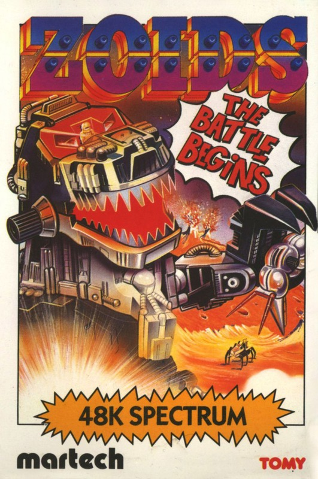
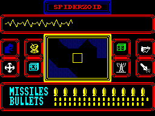
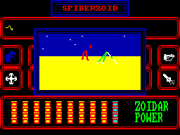

Zoids


{kind=link}

| Publisher: | Martech |
| Price: | £7.95 |
| Year: | 1985 |
| Source: | CRASH, Issue 25 |

A warlike race inhabited the planet Zoidstar, building complex fighting machines, Zoids, which eventually allowed them to defeat all their enemies in battle. Once the potential for real war was over, the organic life forms developed androids to control their Zoids and one-on-one battles were fought for the entertainment of the populus. Then a freak meteor storm destroyed all living organisms, leaving only immensely powerful fighting machines controlled by sophisticated androids to inherit the planet.
A standby Zoid battleforce patrolling a far flung galaxy attempted to return to Zoidstar after the meteor storm with the intention of recolonising the planet, but their transport ship crashed on Zoidstar’s cold Blue Moon. Only the Zoids survived, and they soon discovered that the freezing temperatures on the moon meant they’d have to redesign themselves... and thus the Red Zoids were formed, gaining their colour from heat which they radiate.

The Red Zoids learnt how to operate as a unified fighting force and decided to return to the Zoidstar and completely destroy the old breed of Blue Zoids. Red Zoid battle squadrons were made ready and the attack followed.
The few Blue Zoids that survived initial onslaught regrouped and set about building a new Blue Zoid they called Zoidzilla; the ultimate fighting-machine, capable of challenging the might of the leader of the Red Zoids, Redhorn the Terrible. The Zoid war raged.
Then a small and insignificant space craft plunged into the struggle, crashlanding on Zoidstar. Blue Zoid patrol was the first to reach the wreckage and it picked up a humanoid survivor, who was to become known as The Earthman. He soon became skilled in the art of Zoidthought, the means by which a pilot communicates with the Zoid which carries him — indeed he proved to be a fearless and cunning adversary, better than an android when in control of a Zoid.

to dodge the bits of scenery that get
in the way!
The Earthman drew up a plan which, if successful, would win the war for the Blue Zoids. He volunteered to merge minds with the mighty Zoidzilla and be transported to the middle of the Red Zoid city complex with the aim of destroying their entire base and production factories.
Disaster struck — as the Blue Zoid spacecraft containing Earthman and Zoidzilla descended, a missile struck it destroying the craft and scattering pieces of Zoidzilla over the landscape. The Red Zoids recovered the six pieces of Zoidzilla and buried them under six different city domes. With the Earthman presumed dead and with the loss of their mightiest fighting machine, the Blue Zoids seemed doomed...
All was not lost, however. The Red Zoids failed to spot a small Spiderzoid scuttling away from the wreckage ... it contained the Earthman. You.
You begin the game in that Spiderzoid, your mind merged with the machine’s consciousness and in control of its functions (annotated on the main picture). Your mission is to roam the planet, entering the Red Zoid city complexes in order to collect the six pieces of Zoidzilla. Each time you collect a segment of the mighty machine, your Zoid will be upgraded to a more powerful, stronger machine until finally, with all six pieces in your possession, you will be able to merge minds with Zoidzilla. Then you must seek out Redhorn the Terrible and do battle.
There are ten Red Zoid strongholds, each containing a number of cities, a mine, a powerplant and a distress beacon. The domed cities are guarded by Slitherzoids and contain other, more powerful Red Zoids which will be released upon you. Spending too long in one stronghold is dangerous — the distress beacon summons Redhorn and Mammoth the Destroyer, if you remain in one place too long, life will get very short!
Remember, you are not in control of your Zoid — you have merged minds with it, and use the keyboard or joystick to operate the interface between your mind and the mind of the machine. When you use the icons, windows will pop onto the main display, in the same way as thoughts pop into your mind. Heed them. Occasionally your Zoid will not do exactly as it is told — it is programmed to survive if at all possible. An excellent feature of the game is the fact that a game can be saved out for future playing. The only problem is that the game can’t be saved if your Zoid feels threatened...
CRITICISM
‘Zoids is simply the best game I’ve played on the Spectrum. There are games with better graphics, better sound and ones which have amazing features, but this one with the sheer depth of game and fabulous on-screen presentation, overshadows them all. The objective of the game seems pretty simple, but actually achieving the task requires a combination of arcade skills and strategy. After playing the game all morning I found myself still discovering aspects of gameplay that I’d overlooked completely. The program offers a huge challenge, but the task it throws down is by no means an impossible one, it just requires a lot of learning and experimentation. Unlike most games the reward for finishing is one which makes the game well worth persevering with. The graphics are excellent, with an amazing windowing system and excellent 3D when you have to guide a missile to its target. Zoids is a game not to be missed.’
‘If you can only afford one game this month then this is the one to buy! The Electronic Pencil Company have improved vastly on their first game, The Fourth Protocol, and have produced one of the most addictive, engrossing and innovative games to appear for quite a while. Following the style of some of Denton Designs’ games they have included icons, windows and arcade action to produce a game that has much to offer the player. The depth of play is astounding. Graphically the game is very good, but the sheer scope of Zoids makes it a winner. As well as being a massive game it is also very easy to get into: the icons are very straight forward and in no time at all you are running around doing battle with Red Zoids. This game could take a couple of months to play out, and if you want a lot of entertainment for your money, get it!’
‘The most prominent aspect of Zoids is the strategy element. There are snippets of arcade action too, and when they do come up they’re very good. The icons are simple and easy to use and the graphics are very good. Sound is the only thing that the game lacks, as is the case so often with Spectrum games, but it’s not really that important, is it? I’d recommend Zoids to anyone who likes a good challenge, because it’s not a ‘10 minutes play and it’s finished’ job unlike so many of the games these days.’
COMMENTS
| Control keys: | Definable |
| Joystick: | Kempston |
| Keyboard play: | Responsive |
| Use of colour: | Very good |
| Graphics: | Excellent, with a very fast and effective windowing system |
| Sound: | Reasonable |
| Skill levels: | Gets harder as you start to cause trouble to the enemy |
| Screens: | Main display console, with windows and a scrolling map |
| General rating: | A brilliant arcade action/strategy game |
| Use of computer: | 94% |
| Graphics: | 95% |
| Playability: | 93% |
| Getting started: | 89% |
| Addictive qualities: | 95% |
| Value for money: | 96% |
| Overall: | 96% |